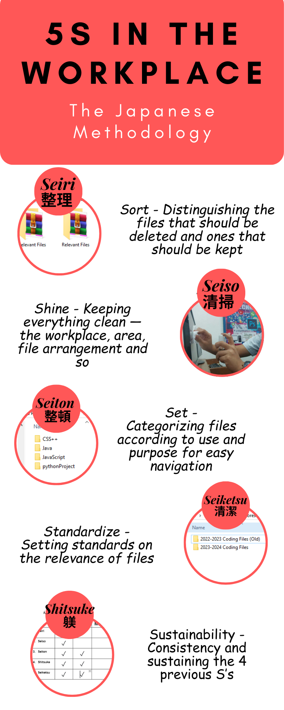

Welcome to My Portfolio
This is my video resume (No video resume yet, so empty YT Code):
Greetings! I am Lui Jacob H. Flores, a grade 12 Information, Communication and Technology student of Mary Immaculate Parish Special School. I study different things such as programming, setting up computers, media and many others.
"The time expended to one-up others is better off spent on trying to better oneself."
Biography
I was born in Las Pinas City and was raised with my parents not on good terms. From Kinder to Nursery, I went to Sto Nino De Eucharistia and once I entered grade school, I enrolled to Mayflower Academy of Las Pinas. Soon, from grades 2 up until 4, I moved to my father's place and studied at La Consolacion College of Tanauan. Afterwards, I moved back to my mother, to Las Pinas City and transferred back to Mayflower. I then entered High school in Mary Immaculate Parish Special School, built connections, relationships with others. Since then, I have been a loyal student of Mary Immaculate Parish Special School Inc.
Credentials and achievements:
Personal Interests
Journey as a MIPSS Student
My journey as an ICT student in Mary Immaculate Parish Special School Inc., I had learned great quantities of things. In terms of education, I learned how to deal with hardware components of a computer; how to properly handle them, what their compatibilities are , how a personal computer is build. Other than that, I also learned a variety of programming languages; basics of Java, HTML and JavaScript utilizing Visual Studio Code and Python, while making use of PyCharm. Lastly, proper netiquette and proper use of the internet are also things I learned under my teachers while studying at MIPSS. Socially, I learned how to socialize and how to express myself properly, built solid relationships with my peers.
Portfolio
CSS
My works in Computer System Servicing:

Contact Me
For further inquiries, feel free to reach out to me through any of the following:
-
Gmail: ljhf2k5@gmail.com
FaceBook: Wiji Flores
Phone Number: 0905-343-8782 / 0921-432-7215